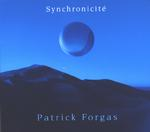

Home Artist links Label link

Patrick Forgas - Synchronicité
| Artist: | Patrick Forgas |
| Title: | Synchronicité |
| Label: | Musea Records FGBG 4437.AR |
| Length(s): | minutes |
| Year(s) of release: | 2002 |
| Month of review: | [05/2002] |
Line up
Patrick Forgas - keyboards, percussion
Tracks
| 1) | Animus | 7.20
|
| 2) | Anima | 6.48
|
| 3) | La Persona | 6.40
|
| 4) | Les Nombres | 7.46
|
| 5) | L'Inconscient Collectif | 7.04
|
| 6) | L'Ombre | 6.23
|
| 7) | Le Soi | 7.19
|
Summary
Patrick Forgas has been releasing music since 1977. First in his band Forgas,
bringing a brand of jazzrock to the audience (also released by Musea), later
as Forgas Band Phenomena (don't know these albums) and now he releases a more
meditative album in a beautiful digipack.
The music
All the songs on this album are in a similar vein, with the keyboards
dominating the sound spectrum. A good example is Animus, where the keyboards
occur in many different styles: backdrop keyboards, xylophone like, string like
and horn like. All these can be at work
at the same time, but the music never gets harried or hectic, always breathing
out a soothing atmosphere. Later on, the percussion sets in and the keys
starts to dance a bit more. The overall sound is a bit cold, and the only
references I could think of were 80ies TD and maybe a bit of Blenner.
Anima is more up-beat: percussion and fast piano throughout. The keyboards sound
like voices and have a bit of a Ciani feel. Playful on the one hand, it is
also a bit sluggish on the other. The percussion borders on jazzy, and stays
the same throughout. The production is very clear and precise.
On La Persona the music is unmistakably similar to Between Two Worlds by
Patrick O'Hearn. Understated melodies, lots of "low" in the music and
a strong bass sound, slow build up and little variation. Nonetheless, one
grows used to this kind of music, especially after a few listens. I do have
to say that O'Hearns songs are way shorter.
Drip drip echoes, we have entered into a cave for Les Nombres. The music now has
a classical tinge, reminding me of Satie and Karda Estra for something more
contemporain. Sensuous with lots of string like synths and a bit of a
Oriental feel. L'Inconscient Collectif has a nice theme and harkens back
to O'Hearn again. L'Ombre has a nice atmosphere, but is at times a but tuneful.
Le Soi adds nothing to the previous.
Conclusion
To me, Forgas was someone making a brand of jazzrock typical for the seventies
and this album is kind of a surprise. It consists mostly of keyboards with
some jazzy percussion added to it, all unobtrusively and tastefully brought
to your ears. Some nice melodies, clear production, but beware: the references
to O'Hearn and the like ought to make clear, that the music is way more
electronic than you might think. Pleasant to listen to, but no more than that.
© Jurriaan Hage